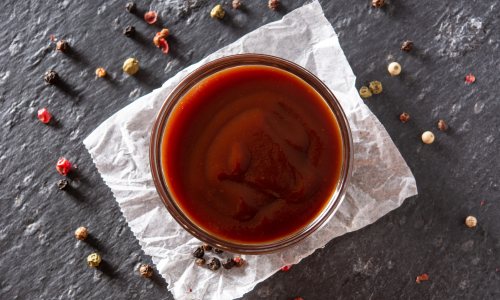

BBQ Sauce
Smokey, tangy, thick, and sweet homemade BBQ sauce that's perfect for
marinating, dipping, and grilling.
Ingredients
- 8 oz tomato sauce
- 1 cup Ketchup
- 2/3 cup light brown sugar
- 1/4 cup unsulphured molasses
- 2/3 cup red wine vinegar
- 2 tsp hickory flavored liquid smoke
- 1/2 tsp smoked (or regular) paprika
- 1/2 tsp salt
- 1/4 tsp onion powder
- 1/4 tsp garlic powder
- 1/4 tsp cayenne pepper
- 1/4 tsp freshly ground black pepper
- 1/8 tsp chili powder
- 1/8 tsp ground mustard
- 1/8 tsp ground cinnamon
Directions
- Add all ingredients to a large saucepan and mix together until smooth
- Cook over medium heat, stirring frequently, until mixture comes to a
boil, then reduce the heat and simmer for 20 minutes to an hour,
stirring occasionally.
- Remove from heat and allow to cool. The sauce will thicken slightly as
it cools.
- Store in an air tight container or jar in the fridge for up to 3
weeks.